ARMALikelihoodFactory¶
- class ARMALikelihoodFactory(*args)¶
Maximum likelihood estimator of a multivariate ARMA Gaussian process.
- Available constructors:
ARMALikelihoodFactory()
ARMALikelihoodFactory(p, q, d, invertible)
ARMALikelihoodFactory(indP, indQ, d, invertible)
- Parameters
- pint
Order of the AR part of the
 process of dimension
process of dimension  .
.- qint
Order of the MA part of the
process of dimension .- dint, 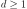
Dimension of the process.
- invertiblebool, optional
Restrict the estimation to invertible ARMA processes.
By default: True.
- indP
Indices All the
 orders that will be investigated.
Care: not yet implemented.
orders that will be investigated.
Care: not yet implemented.- indQ
Indices All the
orders that will be investigated.
Care: not yet implemented.
Notes
We suppose here that the white noise is normal with zero mean and covariance matrix 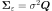 where
 . It implies that the ARMA process estimated is normal.
. It implies that the ARMA process estimated is normal.Let 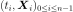 be a multivariate time series of dimension
from an process.If we note 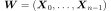, then
 is normal with zero mean. Its covariance matrix writes 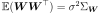 which depends on the coefficients 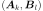 for 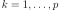 and
is normal with zero mean. Its covariance matrix writes 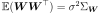 which depends on the coefficients 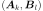 for 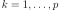 and  and on the matrix
and on the matrix  .
.The likelihood of
writes :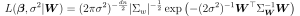
where 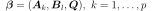,
and where  denotes the determinant.
denotes the determinant.No evaluation of selection criteria such as AIC or BIC is done.
Examples
Create a time series from a scalar ARMA(4,2) and a normal white noise:
>>> import openturns as ot >>> myTimeGrid = ot.RegularGrid(0.0, 0.1, 50) >>> myWhiteNoise = ot.WhiteNoise(ot.Triangular(-1.0, 0.0, 1.0), myTimeGrid) >>> myARCoef = ot.ARMACoefficients([0.4, 0.3, 0.2, 0.1]) >>> myMACoef = ot.ARMACoefficients([0.4, 0.3]) >>> myARMAProcess = ot.ARMA(myARCoef, myMACoef, myWhiteNoise) >>> myTimeSeries = myARMAProcess.getRealization()
Estimate the ARMA process with the maximum likelihood estimator:
>>> myFactory = ot.ARMALikelihoodFactory(4, 2, 1) >>> myARMA = myFactory.build(ot.TimeSeries(myTimeSeries))
Methods
build(*args)Estimate the ARMA process.
Accessor to the object's name.
Accessor to the current P order.
Accessor to the current Q order.
getId()Accessor to the object's id.
Accessor to the initial AR coefficients.
Accessor to the initial covariance matrix of the white noise.
Accessor to the initial MA coefficients.
Accessor to the invertible constraint.
getName()Accessor to the object's name.
getP()Accessor to the P orders.
getQ()Accessor to the Q orders.
Accessor to the object's shadowed id.
Accessor to the verbose mode.
Accessor to the object's visibility state.
hasName()Test if the object is named.
Test if the object has a distinguishable name.
Accessor to the initial AR coefficients.
setInitialConditions(arCoefficients, ...)Accessor to the initial AR coefficients.
setInitialCovarianceMatrix(covarianceMatrix)Accessor to the initial covariance matrix of the white noise.
setInitialMACoefficients(theta)Accessor to the initial MA coefficients.
setInvertible(invertible)Accessor to the invertible constraint.
setName(name)Accessor to the object's name.
setShadowedId(id)Accessor to the object's shadowed id.
setVerbose(verbose)Accessor to the verbose mode.
setVisibility(visible)Accessor to the object's visibility state.
- __init__(*args)¶
- build(*args)¶
Estimate the ARMA process.
- Available usages:
build(myTimeSeries)
build(myProcessSample)
- Parameters
- myTimeSeries
TimeSeries One realization of the process.
- myProcessSample
ProcessSample Several realizations of the process.
- myTimeSeries
- Returns
- myARMA
ARMA The process estimated with the maximum likelihood estimator.
- myARMA
- getClassName()¶
Accessor to the object’s name.
- Returns
- class_namestr
The object class name (object.__class__.__name__).
- getCurrentP()¶
Accessor to the current P order.
- Returns
- pint
Order of the AR part of the
process of dimension .
- getCurrentQ()¶
Accessor to the current Q order.
- Returns
- qint
Order of the MA part of the
process of dimension .
- getId()¶
Accessor to the object’s id.
- Returns
- idint
Internal unique identifier.
- getInitialARCoefficients()¶
Accessor to the initial AR coefficients.
- Returns
- initARCoeff
ARMACoefficients The initial AR coefficients used for the optimization algorithm.
- initARCoeff
- getInitialCovarianceMatrix()¶
Accessor to the initial covariance matrix of the white noise.
- Returns
- initCovMat
CovarianceMatrix The initial covariance matrix of the white noise used for the optimization algorithm.
- initCovMat
- getInitialMACoefficients()¶
Accessor to the initial MA coefficients.
- Returns
- initMACoeff
ARMACoefficients The initial MA coefficients used for the optimization algorithm.
- initMACoeff
- getInvertible()¶
Accessor to the invertible constraint.
- Returns
- invertiblebool
The initial AR coefficients used for the optimization algorithm.
- getName()¶
Accessor to the object’s name.
- Returns
- namestr
The name of the object.
- getShadowedId()¶
Accessor to the object’s shadowed id.
- Returns
- idint
Internal unique identifier.
- getVerbose()¶
Accessor to the verbose mode.
- Returns
- verboseModebool
Get the verbose mode while both the exploration of the possible models and the optimization steps.
- getVisibility()¶
Accessor to the object’s visibility state.
- Returns
- visiblebool
Visibility flag.
- hasName()¶
Test if the object is named.
- Returns
- hasNamebool
True if the name is not empty.
- hasVisibleName()¶
Test if the object has a distinguishable name.
- Returns
- hasVisibleNamebool
True if the name is not empty and not the default one.
- setInitialARCoefficients(phi)¶
Accessor to the initial AR coefficients.
- Parameters
- initARCoeff
ARMACoefficients The initial AR coefficients used for the optimization algorithm.
- initARCoeff
- setInitialConditions(arCoefficients, maCoefficients, covarianceMatrix)¶
Accessor to the initial AR coefficients.
- Parameters
- initARCoeff
ARMACoefficients The initial AR coefficients used for the optimization algorithm.
- initMACoeff
ARMACoefficients The initial AR coefficients used for the optimization algorithm.
- initCovMatr
CovarianceMatrix The initial covariance matrix of the white noise used for the optimization algorithm.
- initARCoeff
- setInitialCovarianceMatrix(covarianceMatrix)¶
Accessor to the initial covariance matrix of the white noise.
- Parameters
- initCovMat
CovarianceMatrix The initial covariance matrix of the white noise used for the optimization algorithm.
- initCovMat
- setInitialMACoefficients(theta)¶
Accessor to the initial MA coefficients.
- Parameters
- initMACoeff
ARMACoefficients The initial MA coefficients used for the optimization algorithm.
- initMACoeff
- setInvertible(invertible)¶
Accessor to the invertible constraint.
- Parameters
- invertiblebool
The initial AR coefficients used for the optimization algorithm.
- setName(name)¶
Accessor to the object’s name.
- Parameters
- namestr
The name of the object.
- setShadowedId(id)¶
Accessor to the object’s shadowed id.
- Parameters
- idint
Internal unique identifier.
- setVerbose(verbose)¶
Accessor to the verbose mode.
- Parameters
- verboseModebool
Set the verbose mode while both the exploration of the possible models and the optimization steps.
- setVisibility(visible)¶
Accessor to the object’s visibility state.
- Parameters
- visiblebool
Visibility flag.